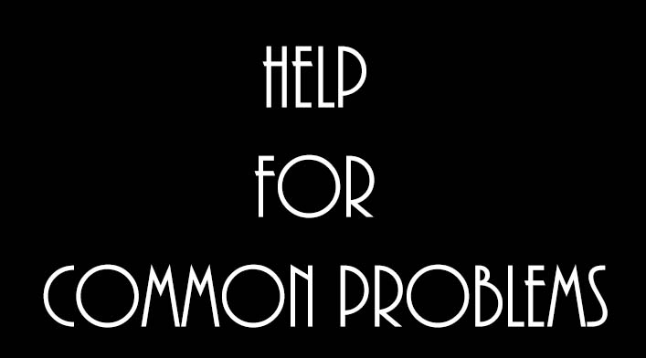

| Contact Me. |
|
|  |
| Forward |
|
Hello, fellow internet users!
This is my blog, where (hopefully) I’ll be able to help out with any problems you might have. I’ve tried to share advice for common problems, but if you want to you can just tell me your problem – I will try to help the best I can. I will be posting stuff about once every two weeks, so don’t worry – you won’t have too wait long for my wise advice! Before ya’ll ask, let me explain why my blog is called “My Life in the Rain.” Basically, one of my favorite sayings is by Vivian Greene, “Life is not about waiting for the storm to pass, it’s learning how to dance in the rain.” I was thinking about that when I decided to start a blog and, voila! As for my name, Calily – well, let’s see if you guys can guess why that is what it is. |
Blog Posts |
|
17th June, 2013 - Weight A Bit!
15th July, 2013 - How to Be Smart! 29th July, 2013 - How to Be Happy! 12th August, 2013 - How to Give Your Life a Mega-Boost of … Well … Life! |